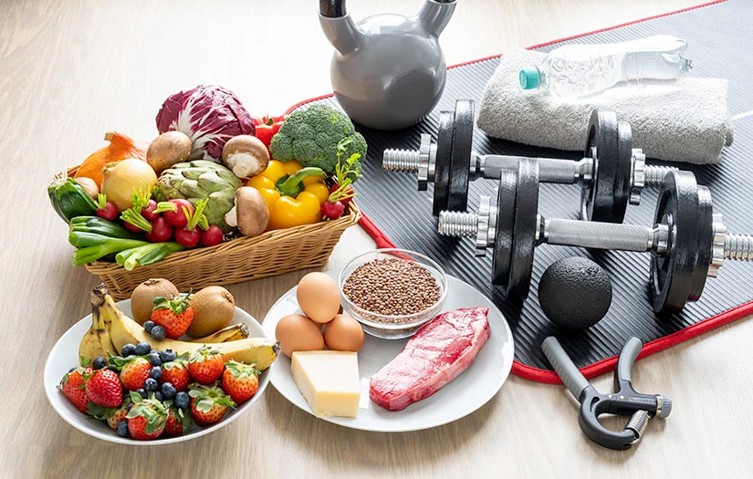
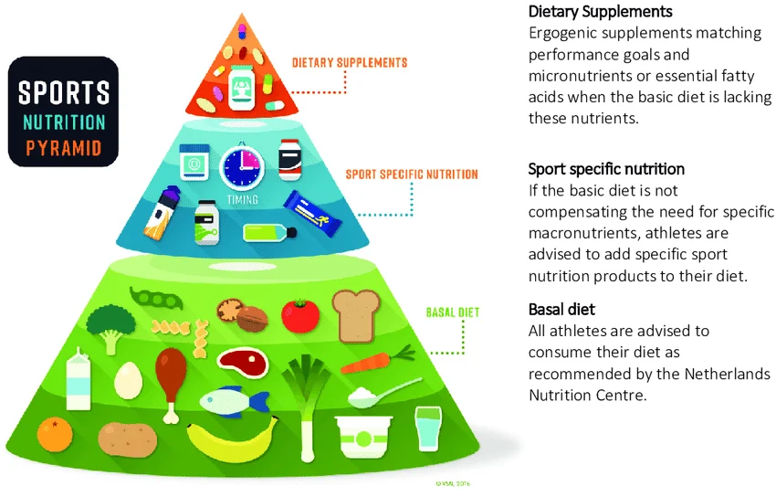

სპორტი და ნუტრიცია ერთმანეთთან მჭიდროდ დაკავშირებული ცნებებია. ფიზიკური აქტივობა ზრდის ორგანიზმის მოთხოვნილებას ენერგიასა და საკვებ ნივთიერებებზე,
| კატეგორია | კვება ვარჯიშამდე | კვება ვარჯიშის შემდეგ |
|---|---|---|
| ნახშირწყლები | შვრია/ბანანი | ბრინჯი/კარტოფილი |
| ცილები | კვერცხი/ხაჭო | ქათამი/თევზი |
| ცხიმები | ზეითუნის ზეთი | ავოკადო/არაქისი |